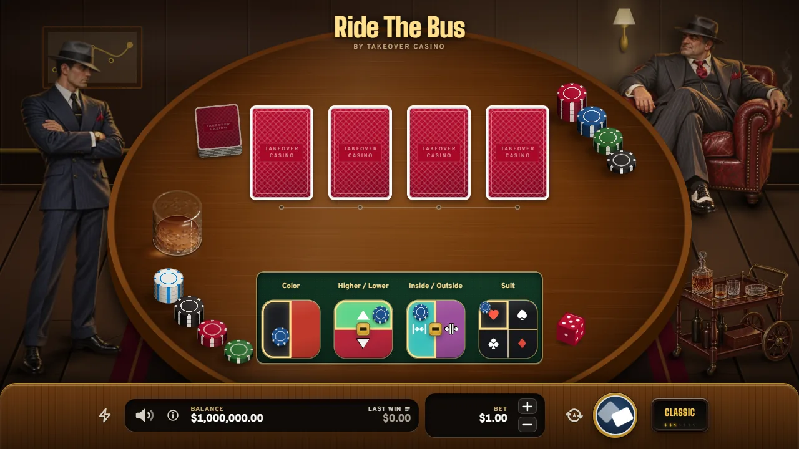

Ride The Bus
A four-guess card game for the Stake Engine platform. The maths and the client, built by one person.
In development, not yet released. Everything you see moving here is captured from the running game.
How it plays
All four guesses are picked before the deal, then the cards turn one by one. A right guess rides on; a wrong one ends the ride. Each combination of guesses is its own bet mode, with its own published table of outcomes.
- ColourRed or black.
- Higher or lowerThan card one, or equal to it.
- Inside or outsideOf the first two, or equal to one.
- SuitOne of four.


The maths
Each card's multiplier is solved so the expected change across the card is one fixed decay, whatever the chance of the guess. A coin flip and a long shot are worth the same in expectation, and four cards compound to the target return.
A Python package solves every stage, writes the published books and reweights each mode so its recorded return lands on 96%.
p · m + (1 − p) · r = d
- p the chance the guess is right
- m the multiplier, solved for
- r what a miss keeps: nothing on card one, then 30%
- d the decay per card, four of them make 0.99
- 257
- published modes: four families of 64 playable combinations, plus Three of a Kind.
- 96%
- recorded return, pinned on every mode.
- 0.1×
- the step every payout floors to. Never rounded up.
The client's tests replay every published book through its own arithmetic, so the screen and the server can never disagree.
Departures, calmest first
| Family | Calling at | Highest multiplier |
|---|---|---|
| Second Chance | First miss from card two keeps 50%, ride goes on | 585.2× |
| Classic | The base rules | 1,354.2× |
| Last Stop | A right suit draws a ticket, 2× to 10× | 4,301.9× |
| High Stakes | A miss keeps 15% | 2,237.3× |
| Three of a Kind | Three cards, one rank; costs 250× | 4,583.3× |
The craft
The win takeover is a departures board. Its title is the destination blind at full size, lettered stop by stop in each tier's colour, and a bus rides the route underneath to the stop reached.
The back room
The Floorman stands at the table and the Boss sits in the corner with his cigar. A rare win moves them; they never react before the cards show it.
17 languages
Every string translated, Arabic right to left, every name fitted to its sign.
Sound in code
Every sound effect synthesised in the browser, under one produced music bed.
Seven screens
From a 320px phone to a desktop window, each layout checked at all seven.
How it was built
- Maths in Python
- Solves the prices and generates every mode's published book.
- Client in Svelte 5
- Turns each book into the round on screen.
- About 1,000 tests
- A parity suite among them replays every published mode.
- Solo
- One developer with Claude Code as the pair, for the Stake Engine platform.
In development, not yet released.